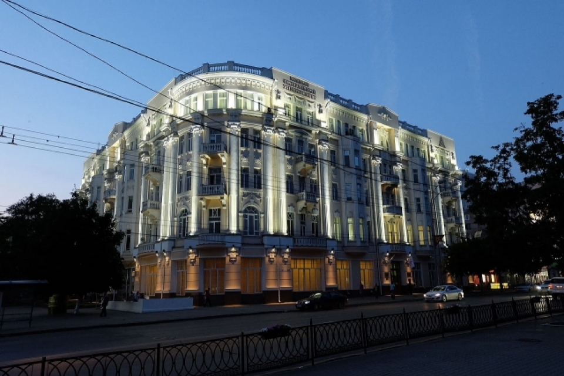

←вернуться на главную
Южный Федеральный Университет
История Южного Федерального Университета начинается в 1915 году, когда на юг были эвакуированы факультеты Российского Варшавского Императорского университета, открытого в 1817 году императором России Александром I. Сайт рыбатекст поможет дизайнеру, верстальщику, вебмастеру сгенерировать несколько абзацев более менее осмысленного текста рыбы на русском языке, а начинающему оратору отточить навык публичных выступлений в домашних условиях. При создании генератора мы использовали небезизвестный универсальный код речей. Текст генерируется абзацами случайным образом от двух до десяти предложений в абзаце, что позволяет сделать текст более привлекательным и живым для визуально-слухового восприятия.
Миссия: развитие научно-образовательного и инновационного пространства Южного федерального округа на основе генерации и трансфера научных знаний и технологий, сохранения и приумножения культурных традиций и ценностей.
Специальности
Южный Федеральный университет
Фундаментальная и прикладная химия
Южный Федеральный университет
Преподаватель английского языка
Южный Федеральный университет
Гидрометеорология
Контактная информация
г. Ростов-на-Дону, ул. Мильчакова, 8а,
тел.: 8-800-700-33-98, +7 (863) 2-370-370,
e-mail: zpk@sfedu.ru,
http://www.abitur.sfedu.ru
Отделение приемной комиссии в Таганроге:
г. Таганрог, пер. Некрасовский, 44, корпус "Д",
кабинет Д113; тел.: +7 (8634) 39-34-22
e-mail: priem-tgn@sfedu.ru;
сайт: http://priem.tti.sfedu.ru/
График работы: Понедельник Пятница с 9.00 до16.00
Суббота с 9:00 до 14:00
Воскресенье - выходной